3D animation for soaps made for the zodiac signs: a series about the elements — fire, air and water — and the signs that belong to them. Made for the brand’s website and Instagram.
Vertical versions, 9:16
4:5 versions
Stills
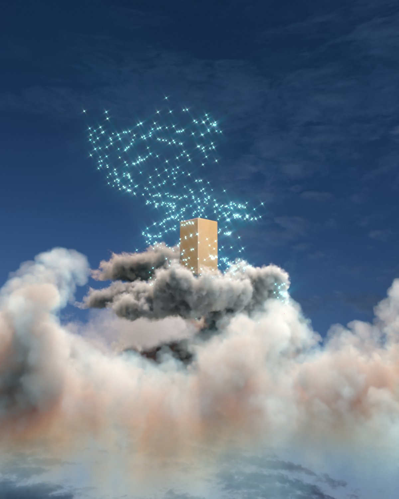
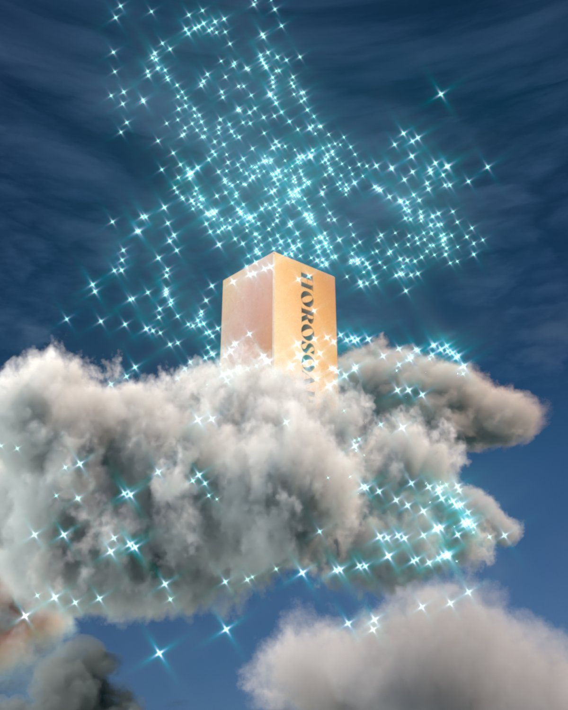
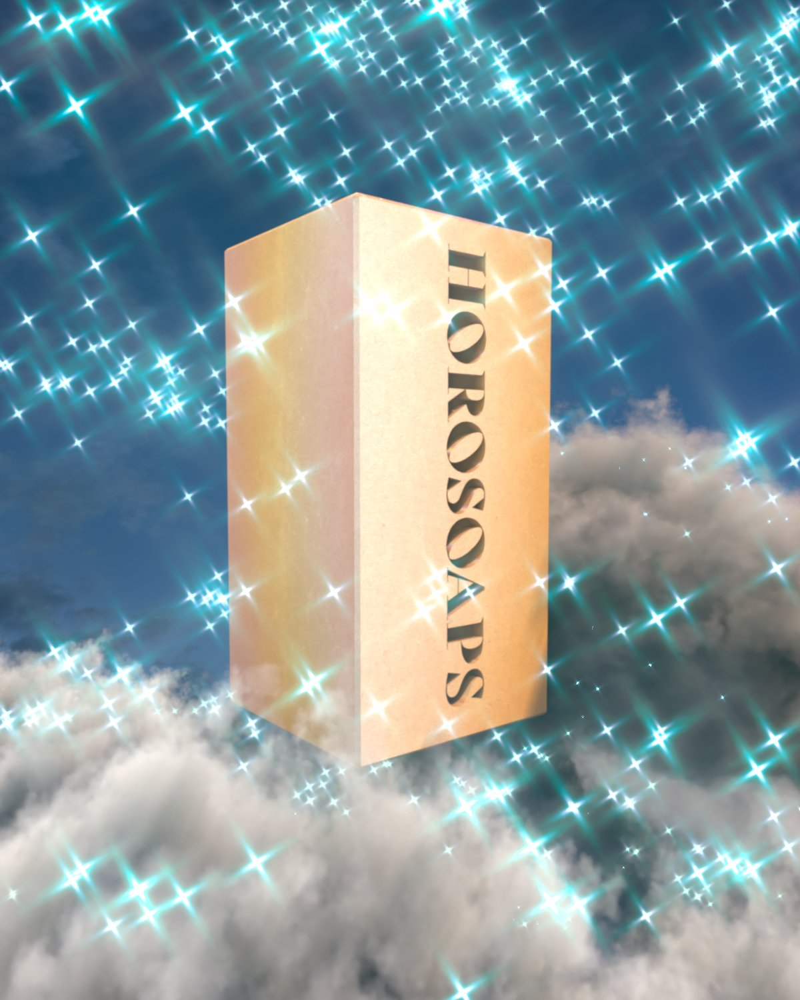
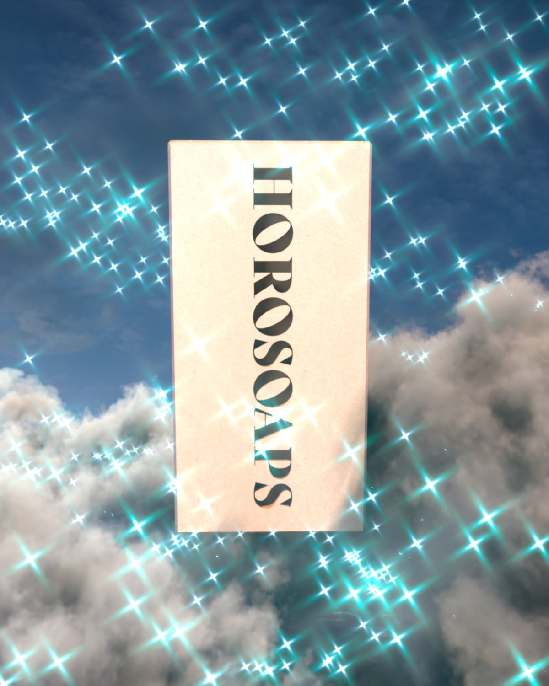
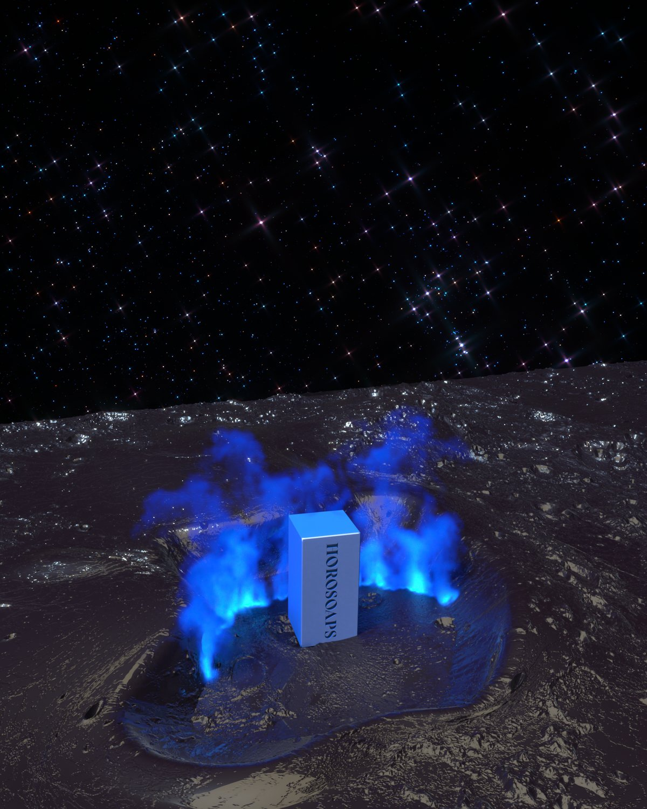
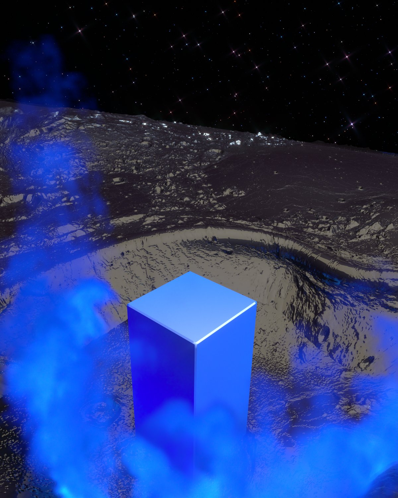
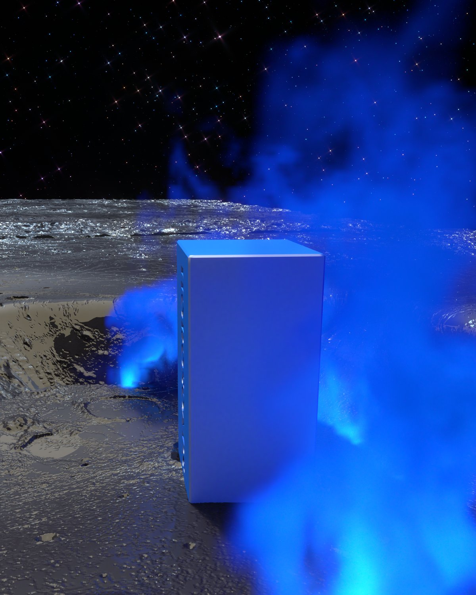
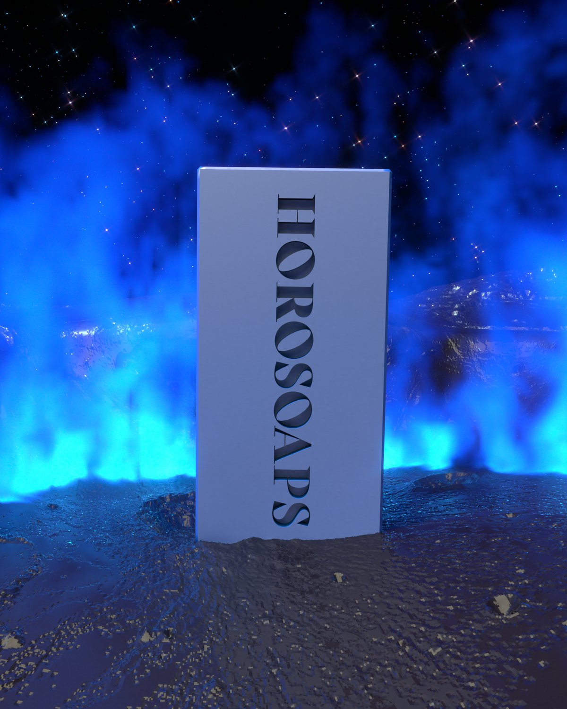
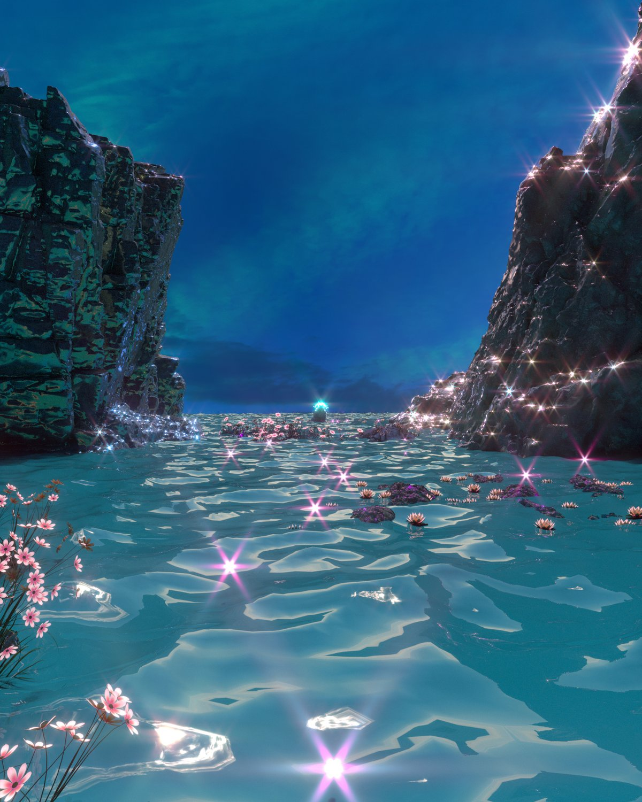
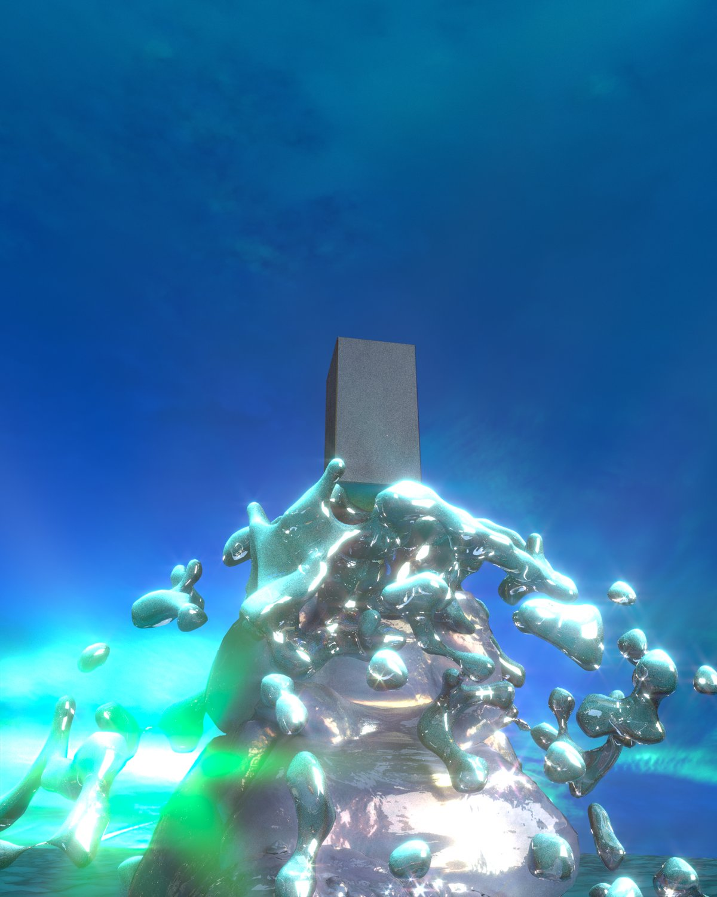
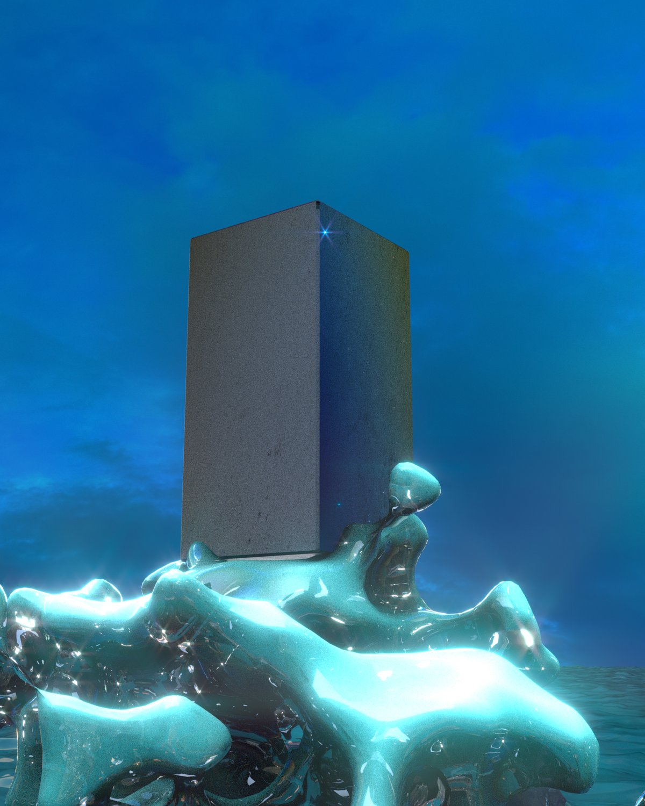
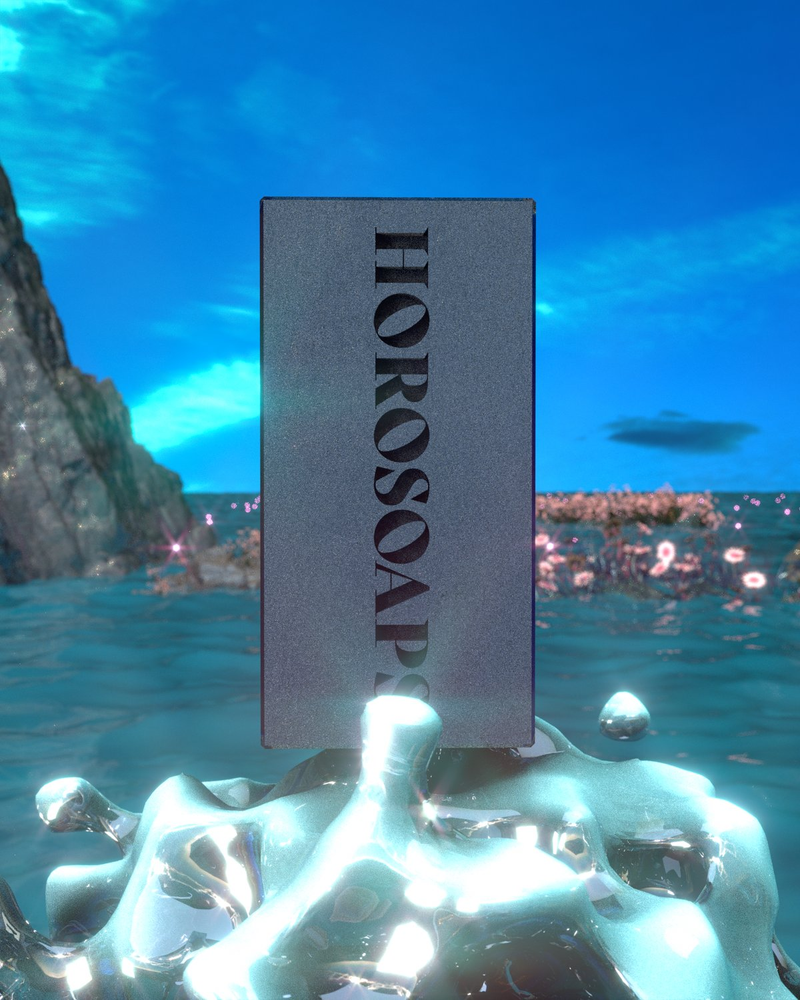
3D model from the scenes — drag to rotate